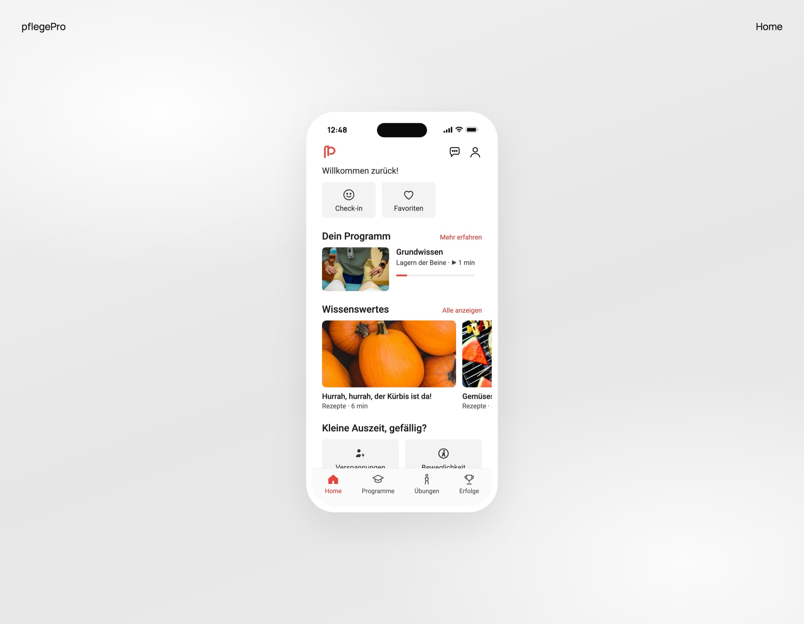
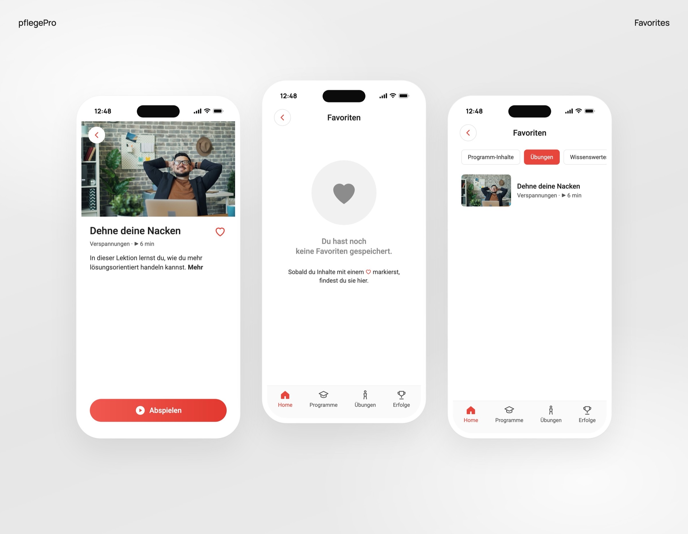
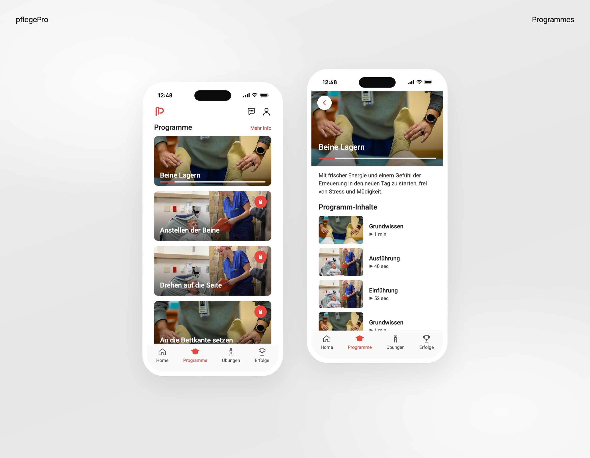
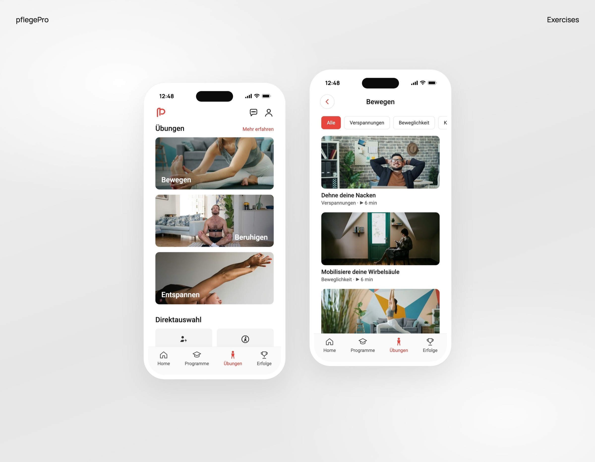

Healthcare · 2023
pflegePro
A workplace health app for safe patient handling in elderly care
Problem
pflegePro is a German mobile learning app for care workers in elderly care, part of workplace health management. Care workers often suffer from lower back pain, shoulder strain and lifting injuries, and the existing safety training felt too theoretical, hard to remember and disconnected from a real shift.
The challenge: how might we make safety training easy to understand and apply during daily care routines?
Research
I ran interviews, contextual inquiry and think-aloud usability sessions with care workers aged 22 to 58: 2 registered nurses, 2 nursing assistants and 1 nursing student. They had to find a lesson on moving a patient from bed to wheelchair, replay a movement animation, save a lesson for later and check their training progress.
- 5Care workers
- 58%Task success
- 61SUS score
Three themes came out: time pressure, fear of hurting patients or moving incorrectly, and a strong preference for visual, step-by-step guidance. The test surfaced three pain points: progress was hidden, the save icon wasn't recognized, and some screens had too much text.
"In theory you know how to lift, but on a stressful day you just forget."
"If a video is too long, I won't watch it between shifts."
Insight
Care workers already knew the theory. What they lacked was guidance short enough to use between shifts and visual enough to copy.
Making
Progress on the home screen
The home screen opens with a "Your programme" card showing the current lesson and a progress bar, instead of progress living in a separate section. Participants couldn't find their progress history and expected to see it straight away on the home screen.
InteractiveFinish a lesson, see it on the home screen
Beine Lagern
Programm-Inhalte
Willkommen zurück!
Dein ProgrammMehr erfahren
WissenswertesAlle anzeigen
Rebuilt from my designs, in German as in the app. Tap lessons on the left to mark them watched.

A heart to save, explained
Saving uses a heart instead of a bookmark, and the empty Favorites screen explains it: once you mark something with a heart, you'll find it here. Some participants didn't recognize the bookmark icon at all.
InteractiveSave a lesson with the heart
Dehne deinen Nacken
In dieser Lektion lernst du, wie du mehr lösungsorientiert handeln kannst. Mehr
Favoriten
Du hast noch keine Favoriten gespeichert.
Sobald du Inhalte mit einem ♡ markierst, findest du sie hier.
Dehne deinen Nacken
Rebuilt from my designs, in German as in the app. Tap the heart on the left and watch Favoriten on the right.

Short, video-first lessons
Programmes and exercises lead with video, each lesson shows its length, from 40 seconds to a few minutes, and longer explanations sit behind "More info", instead of text-heavy screens. Participants said they wouldn't watch long videos between shifts and that less text would suit their working day.
InteractiveFind a short exercise for what hurts
Bewegen
- Dehne deinen NackenVerspannungen · ▶ 6 min
- Mobilisiere deine WirbelsäuleBeweglichkeit · ▶ 6 min
- Für einen stabilen StandKraft · ▶ 6 min
- Spüre deinen Körper – im LiegenVerspannungen · ▶ 6 min
Rebuilt from my designs, in German as in the app. Pick a need; every exercise shows how long it takes.


Outcome
- 58% → 88%Task success
- 62% → 91%Task completion
- 2:48 → 1:22Time on task
- 61 → 86SUS score
A SUS score of 86 is in the excellent range, and ease of use per task (SEQ) rose from 4.1 to 6.2 out of 7.
Next I'd add learning paths by role and experience, offline access for use on shift and, longer term, posture feedback using the phone's sensors.
Walkthrough
The prototypes from this case study, joined into one flow: opening a program from Home, watching a lesson, seeing the progress, and saving the next lesson to Favoriten.
Plays on its own. Screens rebuilt from the prototypes above; the video player is a placeholder. Pause it any time.
Follow a program, save a lesson
Open your program
On Home, tap Beine Lagern under Programm fortsetzen.
Watch a lesson
Open Grundwissen and tap Abspielen. The short video plays to the end.
Progress on Home
Back on Home, the bar fills: 1 of 5 lessons watched.
Save the next lesson
Open Ausführung and tap the heart to save it.
Find it in Favoriten
On Home, tap Favoriten. It opens empty, then the saved lesson appears under Programm-Inhalte.
.say hello
Hiring a UX / product designer who brings AI into the process? Let's talk.
mark.albaran [at] outlook.com
LinkedIn (opens in a new tab)